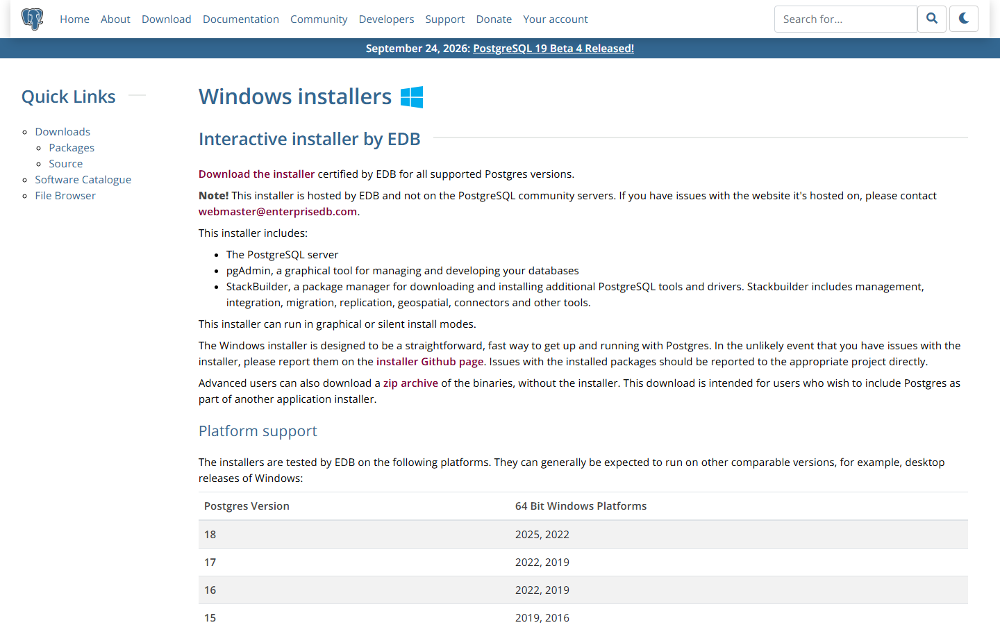
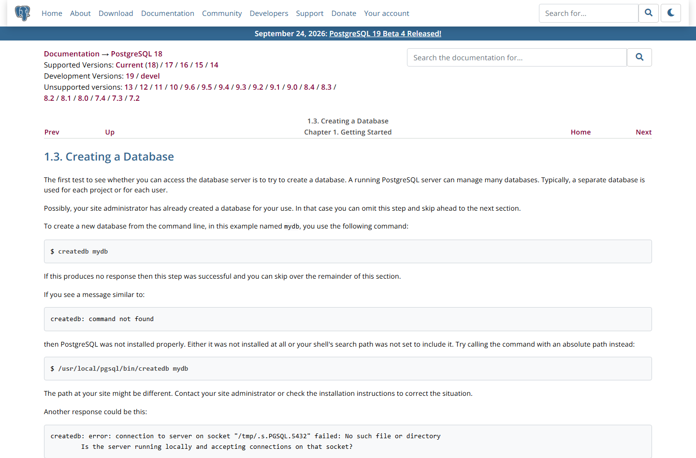

OSS PROJECT INTRO · POSTGRESQL 系列第 2 期：5 分钟跑起来
上一期立住了心智模型——内核管标准、扩展管特长,这期动手验证。目标链路五步:三平台安装 → 初始化与服务 → psql 首连 → 建库建表第一条 SELECT → 高频报错急救。全程命令行,不装图形界面,基于 v18.6(官方 Latest,2026-08-13 发布)。跑完你还会收到三样赠品:一张三平台速查表、一份 pg_hba.conf 认证入门、六个高频报错的第一套解法。
数据库入门的拦路虎从来不是 SQL,而是三件小事:装不上(包源不对、版本混乱、 PATH 不通)、起不来(服务没起、端口被占、初始化失败)、连不上(认证方式不匹配、密码没设、角色不存在)。搜索引擎里这三个问题长年霸榜,答案却大多过时或互相矛盾——因为不同平台、不同安装方式的默认行为真的不一样:Linux 发行版包默认 peer 本地认证,EDB 安装器在向导里就让你给 postgres 设密码,Homebrew 装完甚至不自动启动服务。
所以这一期不猜、不背,而是给你一套可复现的官方路径:每一步都对齐官网与官方文档,报错时知道去哪张表里查。跑通这一次,你就同时拿到了三大平台的全套地图。
这五步的依赖关系是严格的:没装完谈不上服务,服务没起谈不上连接,连不上谈不上建表。每一步末尾都给一个"验证动作",绿灯再前进——这比一口气跑到底、最后在一个模糊的报错里大海捞针,快得多。
官网 Download 页给三块系统各指了一条推荐路:macOS 用 Homebrew 或 Postgres.app,Windows 用 EDB 安装器,Linux 配 PGDG 官方仓库。为什么 Linux 要先配仓库?因为发行版自带的 postgresql 包版本往往落后一两年,PGDG(PostgreSQL 全球开发组的打包项目)才能给到最新的 18 系:
# macOS(Homebrew;Postgres.app 是图形替代)
brew install postgresql@18
# Debian/Ubuntu:先配 PGDG 仓库(见 postgresql.org/download/linux/),再:
sudo apt install postgresql-18
# Windows:官网下载 EDB 安装器,双击向导安装
Windows 向导里有两个关键动作:给超级用户 postgres 设置密码(这是你唯一的超级用户凭证,务必记住),以及默认勾选的 pgAdmin(图形管理工具,本期不用,装了不碍事)。安装器会把 PostgreSQL 注册成 Windows 服务并随机启动——所以 Windows 用户的"第二步"在装完那刻已经完成了。
来源注记——postgresql.org/download 与 /download/windows(2026-09-30 核对):macOS 推荐 Homebrew 与 Postgres.app,Windows 推荐 EDB 交互式安装器(含 pgAdmin 与 StackBuilder),Linux 走 PGDG 仓库;版本支持表列 PG 18 支持 Windows Server 2025/2022。
PostgreSQL 服务第一次启动前,需要一个数据目录(data directory)——库表、系统目录、先写日志全部住在里面,它由 initdb 工具创建。用包管理器安装时,initdb 已经替你跑过了:发行版包和 EDB 安装器都在安装阶段初始化好默认数据目录,只有源码编译或手动部署才需要自己执行 initdb -D 路径。数据目录在哪、端口是多少,连上服务一问便知:
-- 连上任意库后执行
SHOW data_directory; -- 数据目录位置(各平台不同)
SHOW port; -- 默认 5432让服务常驻,三平台各有习惯做法:macOS 用 Homebrew 的服务管理 brew services start postgresql@18;Linux 发行版包通常装完即自动启动,systemctl status postgresql 查看状态,没起就 sudo systemctl start postgresql;Windows 上一步已注册服务,服务管理器里名为 postgresql-x64-18。验证服务是否存活,别猜,直接用 pg_isready——它就是官方给你探测端口的工具,回显 accepting connections 即就绪。
来源注记——官方文档 Server Setup 与 initdb/pg_ctl/pg_isready 各工具页(postgresql.org/docs/18,2026-09-30 核对):数据目录由 initdb 创建,pg_isready 用于探测服务是否接受连接。
psql 是官方命令行客户端。首连的完整写法把四个参数点明——主机、端口、用户、库:
psql -h localhost -p 5432 -U postgres -d postgres
# 简写(全部走默认):psql -U postgres
# 提示符变成 postgres=#,链路即通
\conninfo -- 我连的是谁:连接信息自证
\l -- 列出数据库
\q -- 退出能不能连上,卡点几乎都在认证。PostgreSQL 的连接认证由数据目录里的 pg_hba.conf 逐行决定:每行一条"什么来源地址、什么数据库、什么用户、用什么方式认证"的规则,从上到下匹配到第一条为止。入门阶段认识三种方式就够:peer(仅本地:要求数据库用户名与当前系统用户名一致,Linux 发行版包的默认)、scram-sha-256(密码认证,当前的默认口令加密方式)、trust(免密直连,只配在绝对可信的本地环境)。于是那条著名的报错有了精确解释:Linux 上直接 psql -U postgres 报 Peer authentication failed,是因为你的系统用户不叫 postgres——最快解法 sudo -u postgres psql,借系统里的 postgres 账户对齐它。
来源注记——官方文档 Client Authentication 章节 pg_hba.conf 与认证方法各节(postgresql.org/docs/18/client-authentication.html,2026-09-30 核对):规则自上而下逐行匹配,peer 从操作系统取用户名比对。
官方教程把"创建数据库"当作检验服务可用的第一测——一条 createdb mydb,没输出就是成功:

接着建表插数,一条链跑到底:
createdb mydb -- 或在 psql 里:CREATE DATABASE mydb;
psql -d mydb
CREATE TABLE products (
id serial PRIMARY KEY,
name text NOT NULL,
price numeric(10,2) DEFAULT 0
);
INSERT INTO products (name, price) VALUES ('键盘', 199.00), ('鼠标', 99.50);
SELECT name, price FROM products ORDER BY price DESC;
\d products -- 看表结构,serial 已变成序列默认值五个动作,一条链:建库、切库、建表、插行、查询。其中 serial 是 PG 的自增便利写法(整数序列默认值),numeric(10,2) 是金额的规范类型。到这里,链路第④步绿灯。
报错不可怕,可怕的是对着报错瞎猜。下面六条覆盖了首跑九成的翻车面:
| 报错(关键字) | 根因 | 第一解法 |
|---|---|---|
| createdb / psql: command not found | PATH 未包含 PG 的 bin 目录 | 重开终端;仍不行就把 bin 目录加进 PATH,或用绝对路径 |
| connection refused … Is the server running? | 服务没起,或端口不对 | 起服务(systemctl / brew services);pg_isready 探测 |
| FATAL: Peer authentication failed | 本地 peer 认证,系统用户与数据库用户不一致 | sudo -u postgres psql;或改 pg_hba.conf 的 local 行后重载 |
| FATAL: password authentication failed | 密码不对(常为忘了向导里设的密码) | 临时把 local 行改 trust 进去,ALTER USER … PASSWORD 后改回 |
| FATAL: role "xxx" does not exist | 用不存在的角色登录 | 先用 postgres 超管登录,CREATE ROLE 补建 |
| port 5432 already in use | 端口被旧实例或别的程序占用 | 停掉旧实例;或多实例换端口启动 |
改完 pg_hba.conf 不必重启服务:SELECT pg_reload_conf(); 或 pg_ctl reload 平滑重载即可。另外记住一个防呆点:报错信息里的引号角色名和套接字路径本身就是线索——它告诉你 PG 期望什么、在哪找,对照第 05 节的认证规则,大部分谜题直接解开。
| 平台 | 安装 | 起服务 | 验证 |
|---|---|---|---|
| macOS(Homebrew) | brew install postgresql@18 | brew services start postgresql@18 | pg_isready;psql -U postgres(本机用户超管) |
| Debian/Ubuntu(PGDG) | 配仓库后 apt install postgresql-18 | systemctl start postgresql(通常已自启) | sudo -u postgres psql |
| Windows(EDB) | 安装器向导,设置 postgres 密码 | 随机自启;服务名 postgresql-x64-18 | psql -U postgres -h localhost,输向导里的密码 |
注意一个平台差异:Homebrew 版默认把你的本机用户设为超管角色(安装谁,超管就是谁),所以 mac 上常常连 -U postgres 都不用;Linux 发行版包默认超管是 postgres 系统账户;Windows 超管是 postgres 加你设的密码。三套默认,三种"第一连法"——速查表的"验证"一列就是各自的第一连命令。
每题点击选项立即反馈 · 共 3 题
1. PostgreSQL 服务端默认监听的端口是?
2. Linux 上 psql -U postgres 报 Peer authentication failed,最快解法是?
3. createdb 报 command not found,根因是?
因为 createdb 是一条端到端的命令,而端口探测只是单点的。它要串起四道关卡才算成功:第一关,客户端在——command not found 说明安装不完整或 PATH 不通,这在最前面就拦住了;第二关,服务活着——它会向本地套接字或 localhost:5432 发起真实连接,服务没起立刻报 connection refused,报错里还附上它尝试的套接字路径,等于把"它在哪找服务"也告诉你了;第三关,认证过——pg_hba.conf 里必须有一条规则放行当前来源与用户,否则 FATAL 类报错;第四关,权限够——角色得有 CREATEDB 权限,或你本来就是超管。四关全绿,静默返回。反观 ping 端口:它只能证明"有个进程占着 5432",可能是 PG,也可能是别的程序,更证明不了认证与权限。排错思维也因此成型:把端到端命令的报错当成关卡路标,逐关定位,而不是在应用层反复重试。这也是为什么第 07 节急救表按"报错关键字 → 根因 → 解法"组织——每条报错天然对应一道关卡。
至少五条理由。一,trust 的语义是"免密放行",不是"内网信任":该网段内任何能建立 TCP 连接的进程,都能以任意声明的用户名连入——包括 postgres 超管,数据库层从此没有身份这道门。二,内网不等于可信:内网横向移动是渗透的常规路径,一台失陷的办公网或容器节点就足以把整个库拖走,而日志里连"谁来的"都不可考。三,口径问题:superuser 免密意味着一条 SQL 就能 COPY … TO PROGRAM 在数据库主机上执行命令,风险从"数据泄露"升级成"主机失陷"。四,审计与合规断裂:没有认证就没有可归因的身份,等保、审计要求的访问追溯直接不成立。五,它会被复制:这份"能跑就行"的配置一进仓库、一被抄进新环境,欠的债就利滚利。正确姿势是:按网段收敛 host 行、认证用 scram-sha-256、密码交给密钥管理;本地开发确要方便,只对 127.0.0.1 这一行放宽,并保证它永远排在具体规则之后。安全配置的第一性原理:放宽的是"这一行",暴露的是"整个库"。
带走这五句话:
下期预告:第 3 期《核心概念与整体架构》——进程模型(postgres 守护进程 + 每连接一进程 + 后台进程族)、MVCC 与 xmin/xmax、WAL 先写日志、Buffer 管理与查询处理五阶段,把今天"连上就有一个会话"的黑盒拆开。
Primary source:PostgreSQL 18 官方文档(postgresql.org/docs/18)——本期命令、参数与报错口径均出自官方文档:下载与平台指引见 Download,教程见 Tutorial → Creating a Database,认证见 Client Authentication(2026-09-30 核对)。